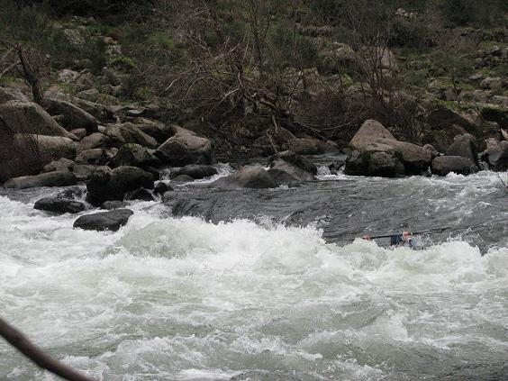

Road and Train to the Rio Tua
‘La indecisión es la llave a la
flexibilidad’
|
|
Road and Train to the Rio Tua |
||
|---|---|---|---|---|
|
‘La indecisión es la llave a la
flexibilidad’ |
Road to the Rio Tua
After some big water on the previous day on the Tamega, people were up for more of that, so we headed to the Tua. The section we had chosen is the last 20 km of the Tua before it empties into the Duoro. As we approached the town of Tua, we come alongside the Duoro - the big, slited river of many hydoelectric dams, flowing from deep inside Spain.
This is the road bridge on the Tua just upstream of the confluence. In the background you can see the train line leading up the valley to the put-in. The train was to be our shuttle. Most of the group are waiting on the bridge - the Micra was often last to arrive, not keeping up with boy racers.
The bridge was build in 1940, in case you were wondering.
You wait an entire trip for a random orange thing to come along, and then you get two at once. Here's the group:
From left to right: Random Orange Rabi�o, Ferg, Coffey, Filipe, Mr. Fred, Catherine, Random Orange Jim.
Train to the Rio Tua
After getting changed and delicately inquiring if it's going to be alright taking boats on the train, we clutter up the platform for a while. Running this shuttle by road is apparently a complete mission, also probably not as much fun.
If there's a train station, there has to be a steam locomotive around here somewhere. Sure enough, here it is, hiding down the back. No Scotland trip is complete without a steam engine picture, so we're keeping the tradition alive.
The train arrives, we load up. Top photography tip: just as taking photographs excuses you from running drops first, it also excuses you from loading boats.

Filipe and Ferg shoot the breeze and scout the river. It looked alright from the train....
I don't think they would allow you do this on the DART, although I did once get a boat on the Stanstead train and into a London taxi.
Rabi�o; smooth...
Fascinating as all this is, you're probably wondering if this trip is ever going to get to the river. Just to keep you calm, there a shot of the river from the train...

Twenty kilometres up the line in 20 minutes, time for one last group photo, complete with a guy who arrived on a moped, somehow.
Rio Tua
Catherine gets things going...
Ferg was keeping his paddles dry on the Tua, for some reason. We worry about that boy sometimes...
Which setting of Mr. Fred is this? You decide...
Here's an intentional artistic shot of a tree. Honestly.
We usually don't have to worry about Ferg twice in the one day. This was one of those days. Here's Ferg keeping his paddles dry again...

Rabi�o looking a little grim, possibly contemplating Ferg's new paddling style and wondering if he's going to be OK...
Filipe charges through a nice wave...
Catherine coming down the line...
The Tua was a big volume cruise of a river, broken up every now and again by sections of rapid, none too taxing. Rob J. reckons it's one of the best 'teaching' rivers he's seen - ideal for groups under instruction. In big water, it's a blast apparently.
From the confluence of the Tua and the Duoro, it's about half a kilometre of upstream paddling along the Douro back to the train station. The Duoro is one of the biggest rivers in Iberia, so it's a bit of a workout at the end of a long day to get home.
The valleys of the Duoro and the Tua are covered in olive trees and vineyards - this is a major port producing region. Big signs everywhere for Sandeman's and Cockburn's port.
Catherine contemplates it all...